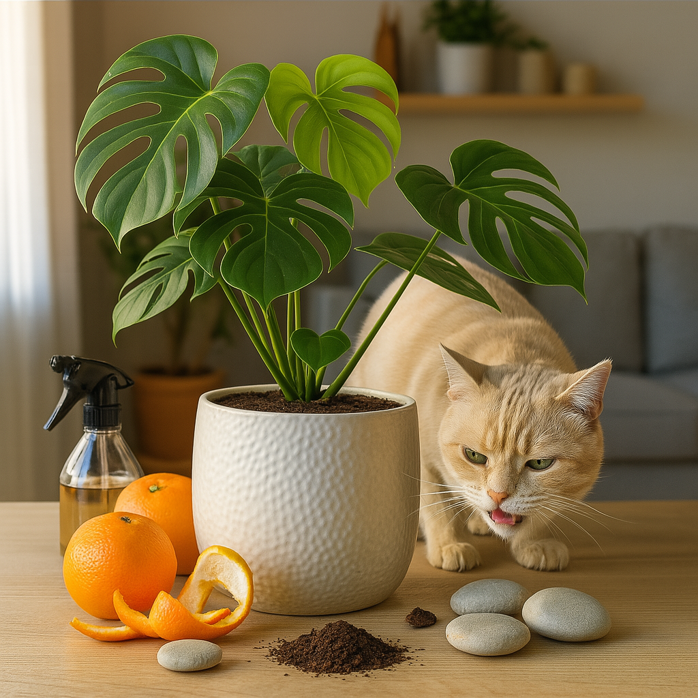

Repelentes naturais para gatos: como evitar que eles mexam nas plantas
Gatos são curiosos por natureza. E plantas... bem, são praticamente uma tentação viva: cheirosas, cheias de folhas para brincar e terra fresquinha para cavar. Se você ama os dois e quer vê-los coexistindo em paz, este guia é para você.
Reunimos métodos naturais, seguros e eficazes que ajudam a manter seus gatos longe das plantas — sem prejudicar nem seu pet, nem seu cantinho verde.
🍊 Cascas cítricas: o repelente mais popular
Gatos detestam o cheiro de frutas cítricas como laranja, limão e tangerina. Essa aversão olfativa pode ser usada a seu favor.
Como usar: Coloque cascas frescas sobre a terra do vaso. Troque a cada dois ou três dias. Também é possível ferver as cascas em água, deixar esfriar e borrifar ao redor.
🧴 Vinagre branco diluído
Outro aroma que os gatos preferem evitar: vinagre. Basta diluir uma parte de vinagre para três de água e borrifar ao redor do vaso. Evite contato direto com a planta.
☕ Borra de café usada
Espalhar uma fina camada de borra de café sobre o solo ajuda a repelir gatos e ainda pode beneficiar o solo, se usada com moderação.
🌿 Ervas aromáticas e óleos essenciais (com cuidado)
Ervas como hortelã, alecrim e lavanda têm cheiro forte — e pouco agradável para gatos. Plantá-las perto de outras plantas pode ajudar. Quanto aos óleos essenciais, use com cautela, pois muitos são tóxicos para os felinos.
🌶️ Especiarias em pó (pimenta, canela)
Especiarias como pimenta-do-reino e canela podem incomodar o olfato felino. Use com moderação, evitando superfícies acessíveis ao focinho ou patas do animal.
🪨 Barreiras físicas: proteção simples e eficaz
Pedrinhas decorativas, casca de pinus, conchas ou pequenas telas sobre a terra tornam o vaso desconfortável para escavação — e ainda ajudam na estética e na retenção de umidade.
📢 Dispositivos de ultrassom
Aparelhos que emitem som em frequência incômoda para gatos podem ser úteis em áreas específicas. Alguns felinos se acostumam, então a eficácia varia.
✅ Redirecionamento: dê ao gato algo mais interessante
Catnip, graminha, brinquedos interativos e arranhadores ajudam a tirar o foco das plantas. Muitas vezes, o problema é apenas tédio ou excesso de energia acumulada.
💡 Como combinar as estratégias e manter a harmonia em casa
Cada gato é único. Um pode odiar vinagre, o outro ignorar laranja. Por isso:
- Teste diferentes métodos e observe o comportamento.
- Combine abordagens (como cítrico + barreira física).
- Evite punições ou substâncias agressivas.
- Reforce alternativas atrativas e enriquecedoras ao felino.
Com paciência, carinho e um pouco de criatividade, é possível manter plantas e gatos em perfeita convivência. 🌱🐱
← Voltar para o blog